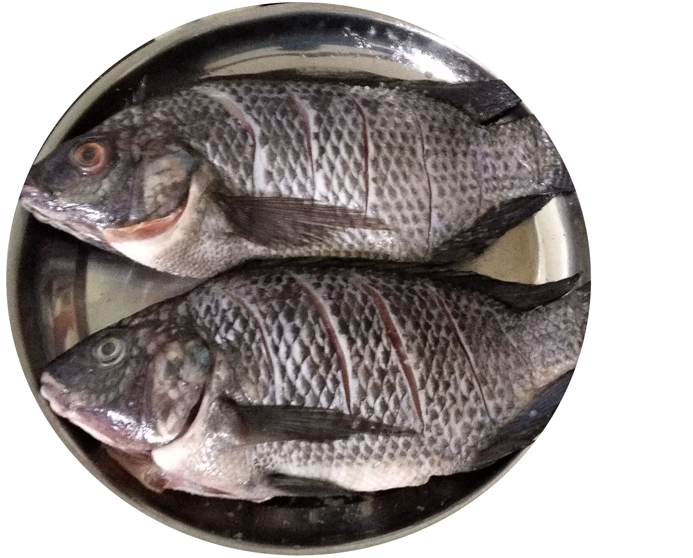

Ugali with fresh fish and greens
Ugali or Posho or Sima is a type of starchy meal made from maize or corn flour in several countries in Africa. Sima is sometimes made from other flours, such as millet or sorghum flour, and is sometimes mixed with cassava flour. It is cooked in boiling water or milk until it reaches a stiff or firm dough-like consistency. In 2017, the dish was added to the UNESCO Representative List of the Intangible Cultural Heritage of Humanity, one of a few foods in the list.
Ingredients (serving for two people)
- Two cups maize or sorghum flour
- Two fresh tilapia fish
- One bunch fresh spinach/kale/cabbage
- Two large onions
- Four large tomatoes
- One capsicum
- One bunch fresh coriander
- Salt, chilli, masala powder and any other spices of your choice
Instructions
Preparation of ugali
- Boil 4 cups of water in a pot.
- Set aside half of the hot water for later.
- Over a high flame, slowly add the flour to the hot water as you stir gently using a mwiko. The mixture hardens fast so try and keep up.
- Add hot water little by little as you keep turning the mixture. Ensure that there isn't any uncooked flour in the mixture.
- Once the mixture has the right consistency, mould it with the mwiko, cover it and let it cook on low heat for a few minutes.
- Uncover the pot, increase flame to maximum for a few seconds
- Flip the pot over and dump the ugali on a flat plate

Preparation of tilapia
- Clean and gut the fish
- Make several cuts on both sides of the fish. Add salt to the cuts.
- Deep fry the fish until golden brown.
- Set aside the fish on a paper towel to dry excess oil.
- Put fresh oil in a wide pan and add diced onions.
- Once the onions turn golden, add diced tomatoes. Cook until tomatoes soften.
- Add in chopped capsicum, coriander and spices to taste. Cover and allow to simmer for two minutes.
- Set aside the gravy and place the fried fish in the pan.
- Pour the gravy on the fish, cover and allow to simmer for two minutes.


Preparation of greens
- Clean and chop the vegetables
- Place on table spoon of cooking oil in a pot and fry some dices onion.
- Once the onions turn golden, add diced tomatoes. Cook until tomatoes soften.
- Add in chopped vegetables and salt to taste. Cover and allow to simmer for one minute.
- Turn the vegetables until they are ready.

Serve Hot! Enjoy.